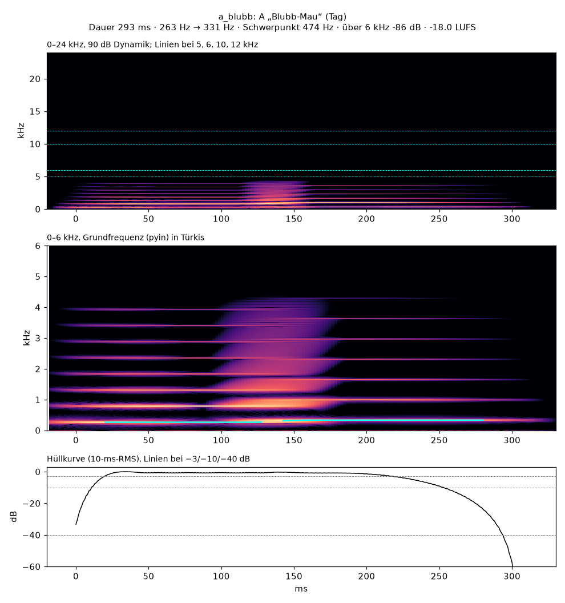
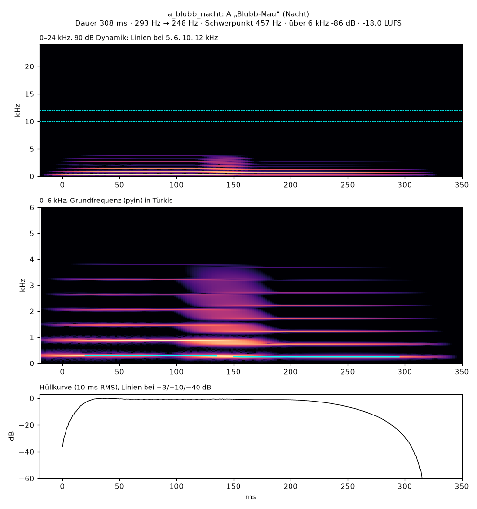
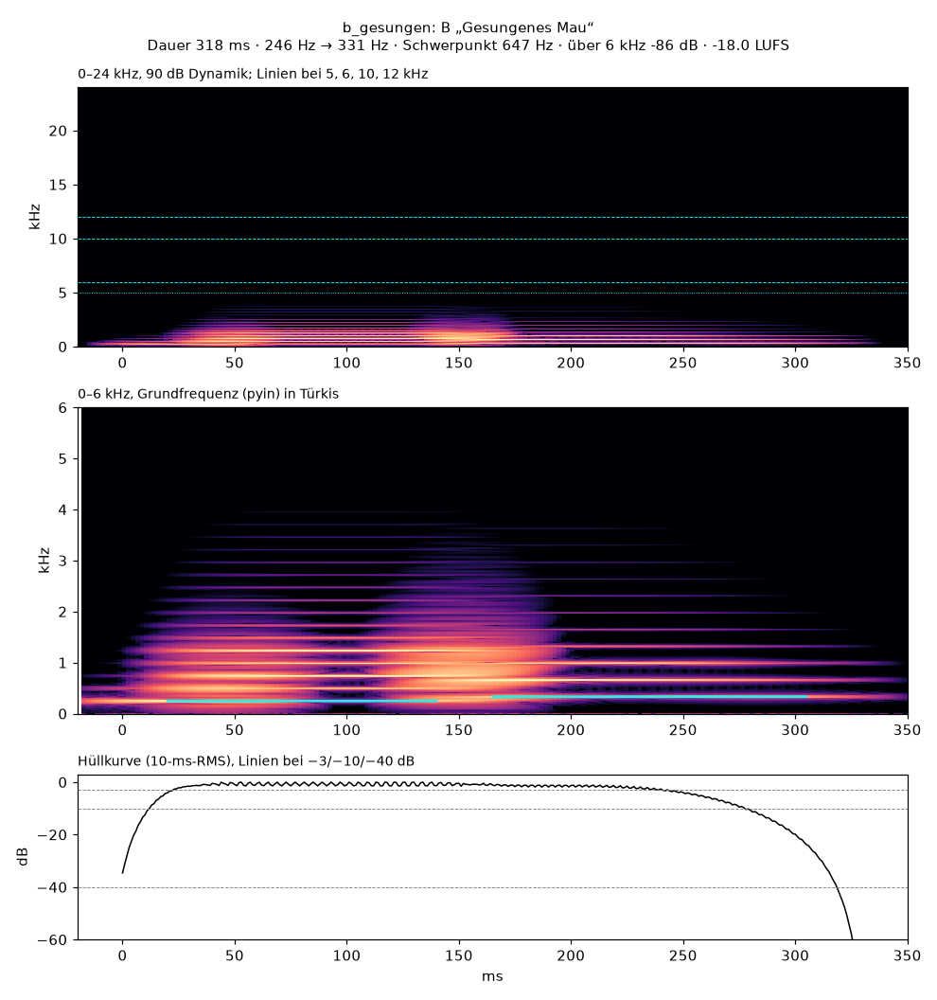
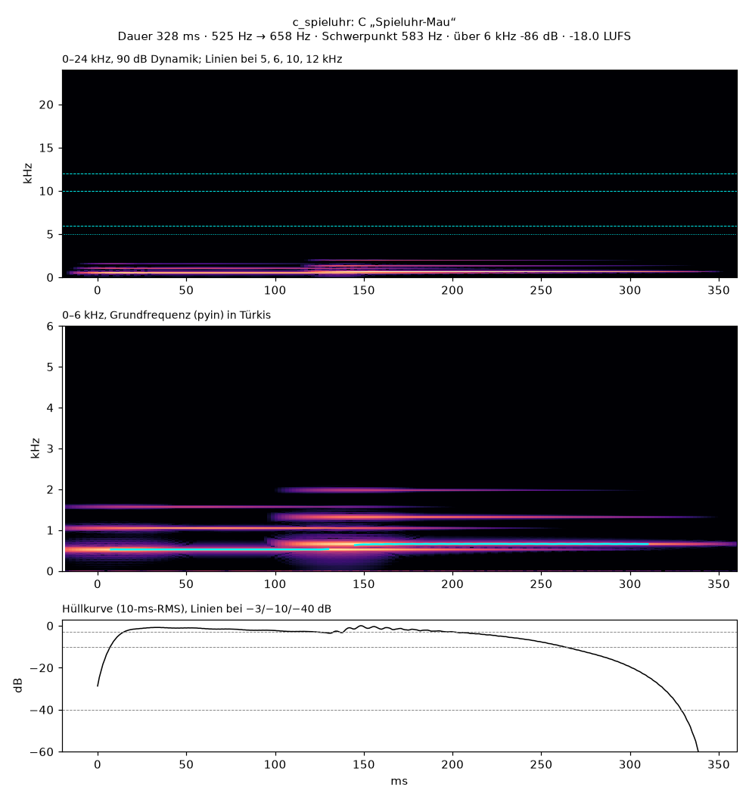
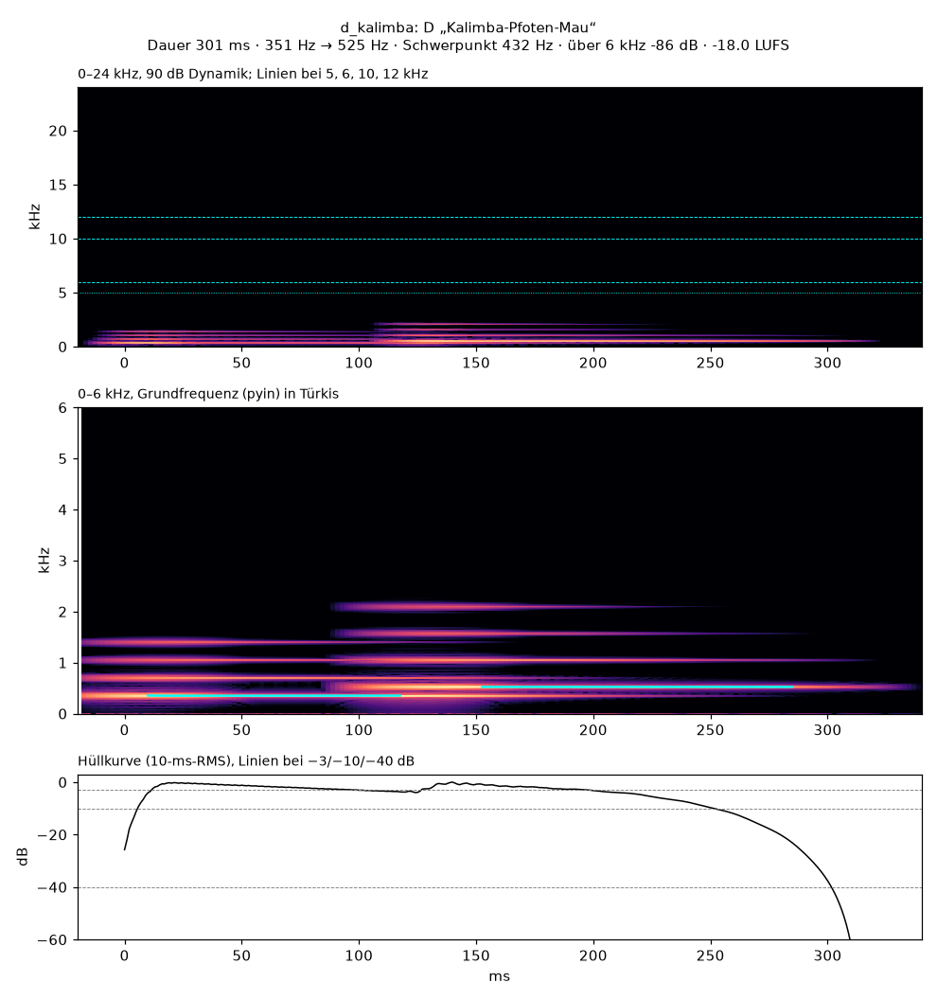
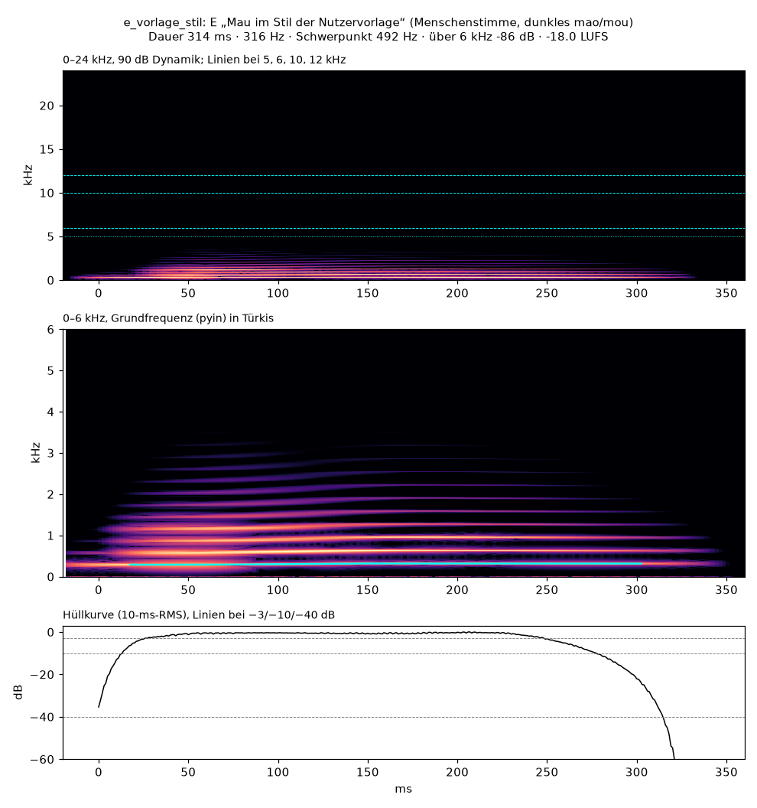

„Mau!“-Ton Entwürfe
Fünf synthetische Varianten für den „Mau!“-Knopf von Mau-Mau Flip. Kurz, süß und so gebaut, dass echte Katzen möglichst nicht reagieren. Alle Varianten sind gleich laut (−18 LUFS, Spitze unter −6 dBTP).
A · Blubb-Mau (Tag)
SynthC4 → E4, große Terz aufwärtsLeitplanken eingehaltenWeicher Synth aus Sinus und Dreieck; zwei Formantfilter wandern m → a → o, das u schließt sich im Ausklang. Kleiner „Plopp“ am Anfang. 293 ms · 263 → 331 Hz · Schwerpunkt 474 Hz
Modell hört: einen klaren Synthesizer- oder Orgelton, „wie ein einfacher Hinweiston“; Quelle: „Benachrichtigung eines Computers oder Handys“. Kein Tierruf.
Spektrogramm

A · Blubb-Mau (Nacht)
SynthD4 → H3, kleine Terz abwärtsLeitplanken eingehaltenDieselbe Idee für die dunkle Kartenseite: tiefer, fallend, dunklere Formanten, Tiefpass 4 kHz. 308 ms · 293 → 248 Hz · Schwerpunkt 457 Hz
Modell hört: einen tiefen, hohlen Rechteckton, „wie das Game Over alter NES-Spiele“; Quelle: „Synthesizer oder Computer“. Kein Tierruf.
Spektrogramm

B · Gesungenes Mau
Sprachchip-StimmeH3 → E4, Quarte aufwärtsLeitplanken eingehaltenStilisierte Stimme in Menschengröße, hell wie ein Spielzeug-Sprachchip, ohne Atem und Vibrato: gesummtes m, „a“ auf dem ersten Ton, „o“ → „u“ auf dem zweiten. 318 ms · 247 → 331 Hz · Schwerpunkt 647 Hz
Modell hört: eine Kinderstimme, die „Mao“ sagt; Quelle: „Partytröte oder Scherzspielzeug“. Kein Tierruf. (Die erste, weichere Fassung hörte es noch als Katzen-Miau; sie wurde ersetzt.)
Spektrogramm

C · Spieluhr-Mau
CelestaC5 → E5, große Terz aufwärtsLeitplanken eingehaltenZwei weich angeschlagene Celesta-Töne; ein Tiefpass öffnet und schließt sich und deutet „ma-u“ an. 328 ms · 525 → 658 Hz · Schwerpunkt 583 Hz
Modell hört: einen hellen Glockenton wie Glockenspiel oder Celesta, „wie der Tada-Ton von Windows XP“; Quelle: „Benachrichtigung“. Kein Tierruf.
Spektrogramm

D · Kalimba-Pfoten-Mau
ZupftöneF4 → C5, Quinte aufwärtsLeitplanken eingehaltenZwei warme, holzige Zupftöne wie Pfotentapser; der Tiefpass öffnet beim ersten Ton („ma“) und schließt beim zweiten („u“). 301 ms · 351 → 525 Hz · Schwerpunkt 432 Hz
Modell hört: eine synthetische Note, „wie ein Power-up in alten Videospielen“; Quelle: „Benachrichtigung“. Kein Tierruf.
Spektrogramm

E · Mau im Stil deiner Vorlage
Stimme287 → 318 Hz, sanfter AnstiegLeitplanken eingehaltenNach den Merkmalen deiner Vorlage gebaut (nur vermessen, nicht verwendet): Menschenstimme in Menschenlage, ein einziger Ton mit kleinem Anstieg, dunkler Vokal m → a → o → u („mao/mou“). Auf 314 ms gekürzt (Vorlage 440 ms), Tiefpass 5 kHz. 314 ms · F0 ≈ 316 Hz · Schwerpunkt 492 Hz
Modell hört: noch nicht befragt.
Spektrogramm
